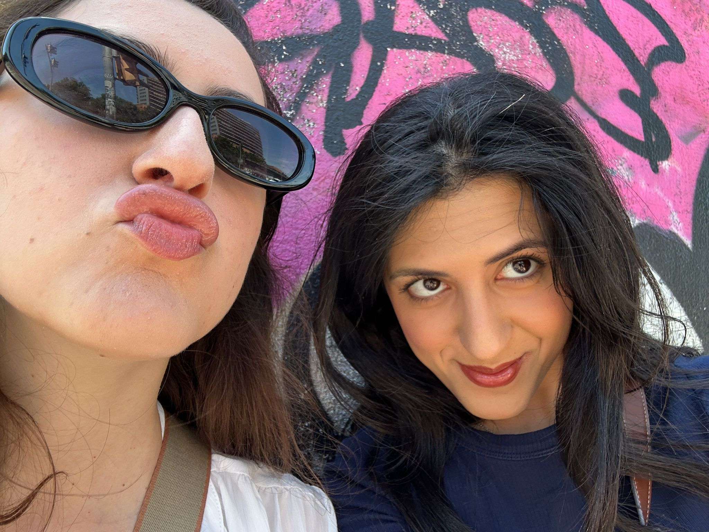

The Calling of Saint Matthew
Knowledge Graph enrichment using SPARQL and Large Language Models
Knowledge Graph & LLM - Caravaggio Case Study
Knowledge Graph enrichment using SPARQL and Large Language Models
This project explores how Knowledge Graphs and Large Language Models can be used together to enrich cultural heritage data. We focus on Caravaggio’s painting “The Calling of Saint Matthew”.
The goal is to extract knowledge from ArCo KG using SPARQL queries and improve missing semantic information using LLMs.

Parvana Gurbanova & Elnara Tumarkhanova